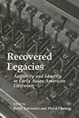

|
At
a Loss for Words
How America Is Failing Our Children and What We Can Do about It
Bardige, Betty, foreword by T. Berry Brazelton, M.D. Promoting
the importance of pre-literacy skills for later learning
272 pp • 6x9 • Spring 2005
paper 1-59213-393-2
EAN 978-1-59213-393-2
cloth 1-59213-392-4
EAN 978-1-59213-392-5
|
|
The
Beat of My Drum
An Autobiography
Olatunji, Babatunde, with Robert Atkinson and Akinsola Akiwowo, foreword
by Joan Baez, introduction by Eric Charry The story of how
Drums of Passion introduced Americans to West African music
272 pp • 6x9 • Spring 2005
paper 1-59213-354-1
EAN 978-1-59213-354-3
cloth 1-59213-353-3
EAN 978-1-59213-353-6
|
|
Commentary
in American Life
edited by Friedman, Murray Commentary magazine's impact
on American life, letters, and politics
232 pp • 6x9 • Spring 2005
paper 1-59213-106-9
EAN 978-1-59213-106-8
cloth 1-59213-105-0
EAN 978-1-59213-105-1
|
|
The
Education of a University President
Wachman, Marvin, foreword by James W. Hilty The remarkable
story of how a Milwaukee newsboy rose to university president
240 pp • 6x9 • Spring 2005
cloth 1-59213-376-2
EAN 978-1-59213-376-5
|
|
The
Fibromyalgia Story
Medical Authority and Women's Worlds of Pain
Barker, Kristin K. The first unbiased assessment of fibromyalgia
264 pp • 6x9 • Spring 2005
paper 1-59213-161-1
EAN 978-1-59213-161-7
cloth 1-59213-160-3
EAN 978-1-59213-160-0
|
|
The
Gender Knot
Unraveling Our Patriarchal Legacy
Johnson, Allan G. A compelling approach to gender
inequality that empowers both men and women to be part of the solution
instead of just part of the problem
Revised and Updated Edition
320 pp • 6x9 • Spring 2005
paper 1-59213-383-5
EAN 978-1-59213-383-3
cloth 1-59213-382-7
EAN 978-1-59213-382-6
|
|
Hegemony
The New Shape of Global Power
Agnew, John Why America wants to spread consumer capitalism,
not rule through empire
296 pp • 6x9 • Spring 2005
paper 1-59213-153-0
EAN 978-1-59213-153-2
cloth 1-59213-152-2
EAN 978-1-59213-152-5
|
|
Hybridity,
or the Cultural Logic of Globalization
Kraidy, Marwan M. A guide to understanding hybridity—the
interaction of cultures
240 pp • 6x9 • Spring 2005
paper 1-59213-144-1
EAN 978-1-59213-144-0
cloth 1-59213-143-3
EAN 978-1-59213-143-3
|
|
Immigrants,
Unions, and the New U.S. Labor Market
Ness, Immanuel Examining the lives of immigrant workers,
both on the job and off
240 pp • 5.5x8.25 • Spring 2005
paper 1-59213-041-0
EAN 978-1-59213-041-2
cloth 1-59213-040-2
EAN 978-1-59213-040-5
|
|
Just
Around the Corner
The Paradox of the Jobless Recovery
Aronowitz, Stanley A searing indictment of the American way
of recession and recovery
176 pp • 5.5x8.25 • Spring 2005
paper 1-59213-138-7
EAN 978-1-59213-138-9
cloth 1-59213-137-9
EAN 978-1-59213-137-2
|
|
Life
and Death in Intensive Care
Cassell, Joan A penetrating look at the values, systems,
and life-and-death dramas in the world of the surgical intensive
care unit
248 pp • 6x9 • Spring 2005
paper 1-59213-336-3
EAN 978-1-59213-336-9
cloth 1-59213-335-5
EAN 978-1-59213-335-2
|
|
Lucia
Testimonies of a Brazilian Drug Dealer's Woman
Gay, Robert One woman's story of life in the slums of Rio
de Janeiro
240 pp • 6x9 • Spring 2005
paper 1-59213-339-8
EAN 978-1-59213-339-0
cloth 1-59213-338-X
EAN 978-1-59213-338-3
|
|
Maya
Achi Marimba Music in Guatemala
Navarrete Pellicer, Sergio The marimba as a cultural force
in rural Guatemala
288 pp • 6x9 • Spring 2005
paper 1-59213-292-8
EAN 978-1-59213-292-8
cloth 1-59213-291-X
EAN 978-1-59213-291-1
|
|
P
Is for Philadelphia
Korman, Susan A primer on the City of Brotherly Love, illustrated
by the children of Philadelphia, for the children of Philadelphia
64 pp • 10x8 • Spring 2005
cloth 1-59213-107-7
EAN 978-1-59213-107-5
|
|
The
Philadelphia Area Weather Book
Nese, Jon, and Glenn "Hurricane" Schwartz, foreword by Edward
G. Rendell A book for every season—now in paperback!
New in Paperback!
264 pp • 8.375x10 • Spring 2005
paper 1-59213-391-6
EAN 978-1-59213-391-8
cloth 1-56639-956-4
EAN 978-1-56639-956-2
|
|
The
Phillies Reader
edited by Orodenker, Richard A rich collection of baseball
literature that chronicles the dramatic history of the Philadelphia
Phillies
Updated Edition
New in Paperback!
302 pp • 6x9 • Spring 2005
paper 1-59213-398-3
EAN 978-1-59213-398-7
|
|
The
Politics of Democratic Inclusion
edited by Wolbrecht, Christina, and Rodney E. Hero, with Peri E. Arnold
and Alvin B. Tillery How institutions foster and hinder
political participation of the underrepresented
352 pp • 6x9 • Spring 2005
paper 1-59213-359-2
EAN 978-1-59213-359-8
cloth 1-59213-358-4
EAN 978-1-59213-358-1
|
|
The
Puerto Rican Diaspora
Historical Perspectives
edited by Whalen, Carmen Teresa, and V�ctor V�zquez-Hern�ndez
Histories of the Puerto Rican experience
320 pp • 6x9 • Spring 2005
paper 1-59213-413-0
EAN 978-1-59213-413-7
cloth 1-59213-412-2
EAN 978-1-59213-412-0
|

|
Recovered
Legacies
Authority and Identity in Early Asian American Literature
edited by Lawrence, Keith, and Floyd Cheung Rediscovering
the writings of early Asian America
320 pp • 6x9 • Spring 2005
paper 1-59213-119-0
EAN 978-1-59213-119-8
cloth 1-59213-118-2
EAN 978-1-59213-118-1
|
|
Revolutionary
Passage
From Soviet to Post-Soviet Russia, 1985-2000
Garcelon, Marc From perestroika to Putin: a recent history
of Russia's turbulent transformation from communist to post-communist
nation
328 pp • 6x9 • Spring 2005
paper 1-59213-362-2
EAN 978-1-59213-362-8
cloth 1-59213-361-4
EAN 978-1-59213-361-1
|
|
Rookies
of the Year
Bloss, Bob A compendium of baseball's brightest prospects
since 1947
224 pp • 6x9 • Spring 2005
cloth 1-59213-164-6
EAN 978-1-59213-164-8
|
|
Seeking
Mandela
Peacemaking Between Israelis and Palestinians
Adam, Heribert, and Kogila Moodley Lessons from South Africa
for the unresolved Israeli-Palestinian conflict
248 pp • 6x9 • Spring 2005
paper 1-59213-396-7
EAN 978-1-59213-396-3
cloth 1-59213-395-9
EAN 978-1-59213-395-6
|
|
Sins
of the Parents
The Politics of National Apologies in the United States
Weiner, Brian A. Should governments apologize for
past wrongs done in their name?
256 pp • 5.5x8.25 • Spring 2005
paper 1-59213-318-5
EAN 978-1-59213-318-5
cloth 1-59213-317-7
EAN 978-1-59213-317-8
|
|
The
Social Logic of Politics
Personal Networks as Contexts for Political Behavior
edited by Zuckerman, Alan S. Re-establishes the connection
between social life and political behavior
368 pp • 6x9 • Spring 2005
paper 1-59213-148-4
EAN 978-1-59213-148-8
cloth 1-59213-147-6
EAN 978-1-59213-147-1
|
|
Stan
Brakhage
Filmmaker
edited by James, David E. The
art and legacy of a towering figure in the independent film movement
248 pp • 6x9 • Spring 2005
paper 1-59213-272-3
EAN 978-1-59213-272-0
cloth 1-59213-271-5
EAN 978-1-59213-271-3
|
|
Trading
Down
Africa, Value Chains, and the Global Economy
Gibbon, Peter, and Stefano Ponte Examining the changing role
of Africa in the global economy
272 pp • 6x9 • Spring 2005
paper 1-59213-368-1
EAN 978-1-59213-368-0
cloth 1-59213-367-3
EAN 978-1-59213-367-3
|
|
The
Triangle Fire, the Protocols of Peace, and Industrial Democracy in
Progressive Era New York
Greenwald, Richard A. A history that uncovers the birth of
Industrial Democracy
344 pp • 6x9 • Spring 2005
paper 1-59213-175-1
EAN 978-1-59213-175-4
cloth 1-59213-174-3
EAN 978-1-59213-174-7
|
|
Zora
Neale Hurston and a History of Southern Life
Patterson, Tiffany Ruby The inner world of all-black
towns as seen through the eyes of Zora Neale Hurston
248 pp • 6x9 • Spring 2005
paper 1-59213-290-1
EAN 978-1-59213-290-4
cloth 1-59213-289-8
EAN 978-1-59213-289-8
|
Click here
to download the catalog. |